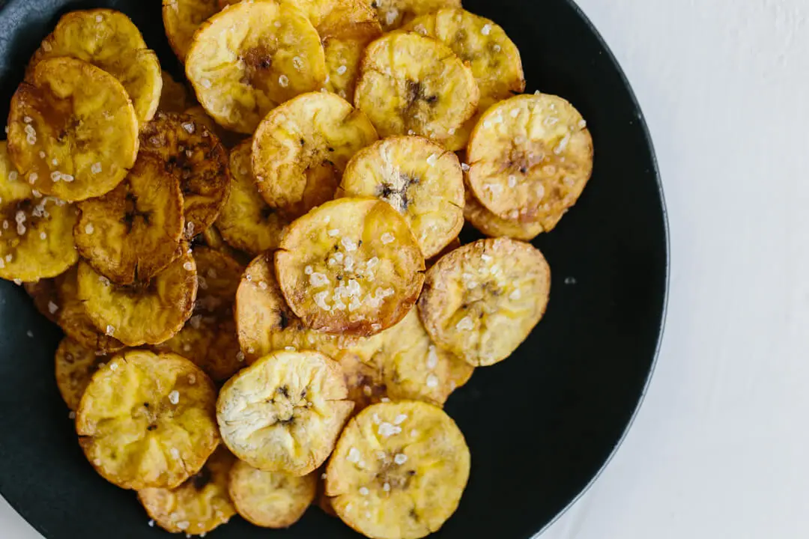

plantain chips

Crispy plantain chips
Plantain chips are a great alternative to potato chips.
Ingredients:
- 1 green plantain
- 1/2 tbsp avocado oil
- sea salt to taste
Instructions:
- Preheat your oven to 350 degrees fahrenheit.
- With a small knife, make 3-4 cuts lengthwise down the plantain, just enough to go through the peel. Then remove the peel.
- Thinly slice the plantain with a mandoline (on the thinnest setting). Add the plantain slices to a bowl and toss with the avocado oil to evenly coat.
- Line a baking tray with parchment paper and place the plantain slices on the tray in one layer.
Sprinkle with sea salt and bake for 15-20 minutes, or until just golden along the edges.